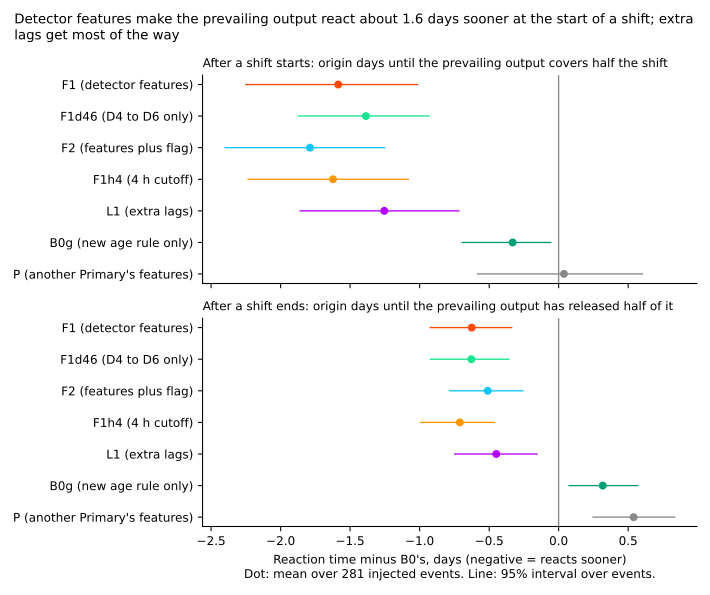
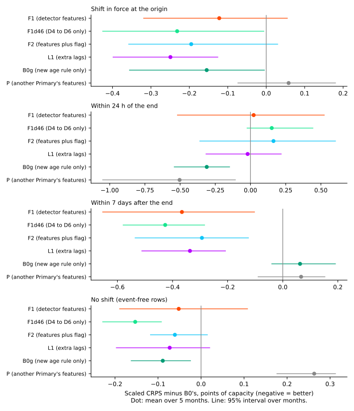
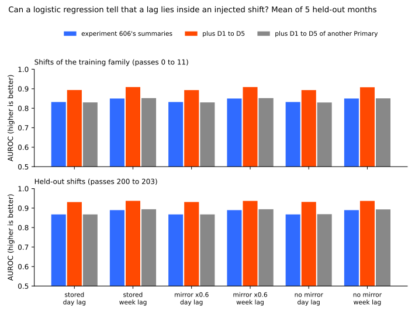
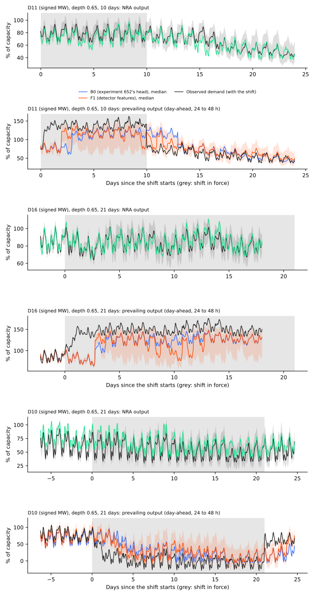
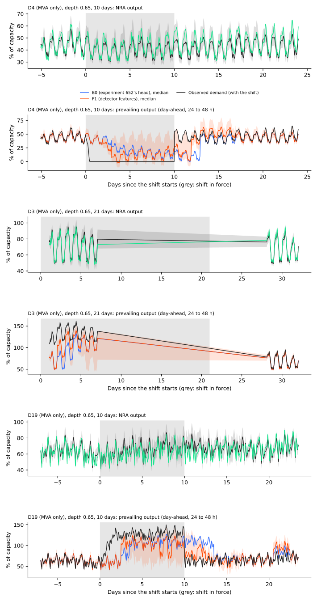
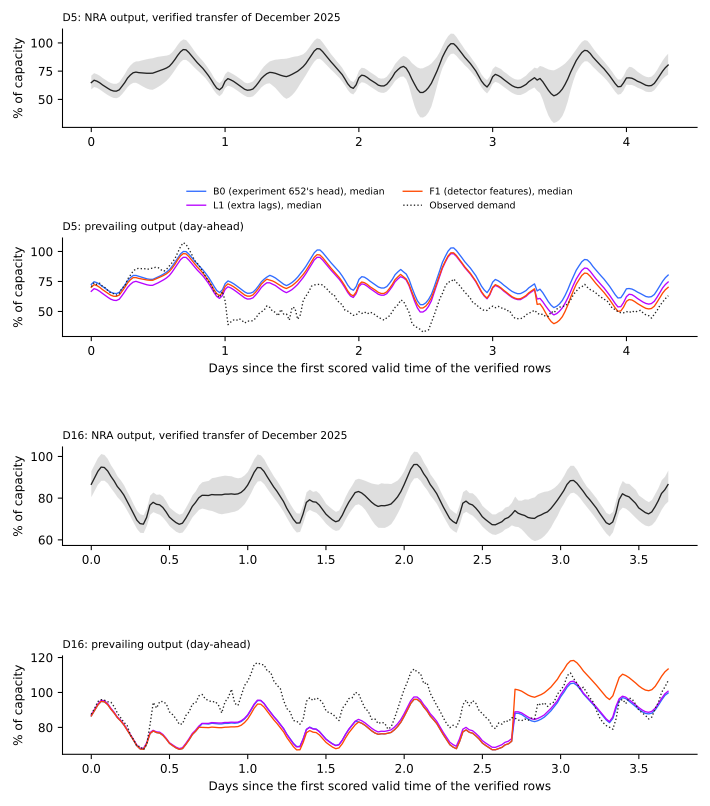
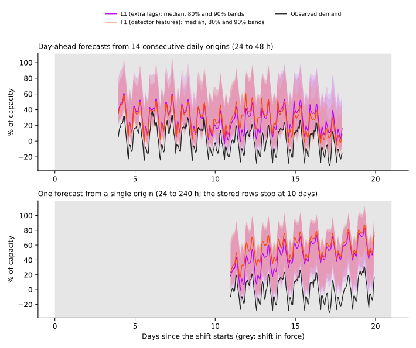

Do causal step statistics, the neighbour mirror, and a return-to-level statistic let the small prevailing heads react sooner to a load shift than extra lagged power inputs do?
Throughout, K1 is the frozen two-output demand neural network. Its normal-running-arrangement (NRA) output forecasts demand as if no shift were under way, and its prevailing output forecasts demand including any shift in force. The small head is the neural network that corrects the prevailing output. B0 is experiment 652's head, L1 is B0 plus extra lagged power, F1 is B0 plus the detector features D1 to D6, and P is the placebo.
A load shift is a period when the electricity network operator moves part of one primary substation's (Primary's) demand onto or off a neighbouring Primary. The two-output demand neural network (K1 plus a small head) should follow such a shift in its prevailing output. We asked whether giving the small head the statistics of a simple step detector makes it follow a shift sooner, and compared it with giving the same head extra recent lagged power instead. Every shift is injected into real history, with its start and end known, so reaction time can be measured exactly.
Take-home message. Detector features make the prevailing output cover half of a new shift 1.59 days [-2.26, -1.00] sooner than experiment 652's head (B0), and release half of it 0.63 days [-0.91, -0.36] sooner after the shift ends. Extra lagged power inputs (L1, experiment 681's block) get 1.25 days [-1.87, -0.74] at the start and 0.45 days at the end, and F1 minus L1 is -0.33 [-0.72, +0.07] at the start, so the features are not shown to beat plain lags. The scaled CRPS where a shift is in force improves by 0.12 points of capacity [-0.33, +0.06], below the 0.30 bar. Verdict: partly supported. F1 reacts sooner than B0 (supported); F1 is not shown to react sooner than L1 (not supported); the veto is not cleared, because F1's CRPS on real event-free rows is above the P4 limit.
Figures







Results
Scores are CRPS in points of capacity (1 point is 1% of a Primary's effective capacity), scaled to a q05 to q95 coverage of 0.90 as in experiment 652, mean of 2 seeds, then of the 5 development months (2025-10, 2025-12, 2026-01, 2026-03, 2026-06). Intervals are percentile bootstraps over the months (5 blocks, so coarse) or over events. B0 refitted here equals experiment 652's stored R-haz exactly (the gate passes).
- Step 1, separability (no refit). A logistic regression on experiment 606's summaries and their absolute values reaches an AUROC of 0.83 to 0.85 (training-family shifts) and 0.87 to 0.89 (held-out shifts) for "this lag lies inside an injected shift". Adding D1 to D5 raises it by +0.061 (day lag) and +0.059 (week lag) on training-family shifts, and by +0.063 and +0.048 on held-out shifts, on the stored bank; the mirror-at-60% and no-mirror banks differ by under 0.002. Predicted +0.05 on every bank: met except the week lag on held-out shifts (+0.047). Stop rule (gain under 0.03): not triggered. The placebo scorer (D1 to D5 of another Primary) adds under 0.005.
- Reaction time, start of a shift (281 held-out events). Mean origin days to cover half the shift, minus B0: F1 -1.59 [-2.26, -1.00] (median -1.0), F1d46 -1.39, F2 -1.79, F1h4 (4 h cutoff) -1.62, L1 -1.25 [-1.87, -0.74], B0g (new age rule, no extra inputs) -0.33 [-0.67, -0.05], P +0.04 [-0.59, +0.59]. P2 (at least 1 day, interval excluding zero) is met for the mean and the median. By event length F1 minus B0 is -0.66, -1.17, -1.48, and -3.34 days (5, 10, 21, and 45 days), so the gain of F1 over B0 is below 1 day for 5-day shifts (audit's own code).
- Reaction time, end of a shift. F1 minus B0 -0.63 [-0.91, -0.36] mean, median 0.0, so P2's 1-day bar is not met at the end. F1 minus L1: -0.33 [-0.72, +0.07] at the start and -0.18 [-0.42, +0.07] at the end. A 4-hour cutoff reacts no sooner than a 6-hour cutoff (F1h4 minus F1: -0.03 and -0.08).
- Scaled CRPS minus B0. In force: F1 -0.12 [-0.33, +0.06], F1d46 -0.23, L1 -0.25 [-0.40, -0.13], P +0.06. Near the end: F1 +0.02, L1 -0.02, B0g -0.31. Just ended: F1 -0.37 [-0.66, -0.10], L1 -0.34, F1d46 -0.43. Event-free: F1 +0.01 [-0.16, +0.20], L1 -0.03. P3 (-0.30 in force, near the end, and just ended) is met only for just ended. Within 7 days after the end, the gain of -0.37 meets the 0.30 bar.
- False alarms. Share of event-free rows where the head's median departs from K1's median (the NRA output) by 3 points or more: B0 0.18, F1 0.19, F1d46 0.18, L1 0.23, K1 0.00. P4 (at most +1 percentage point and +0.02 CRPS) holds for F1 on the bank (+0.7 points; +0.01 CRPS) and not for L1 (+4.5 points). On real event-free rows F1's CRPS is +0.05 [-0.02, +0.13] against B0, an interval that includes zero, so the contrast is unresolved, with a point estimate above the 0.02 limit.
- Scaled in-force CRPS on held-out-family shifts only (the verdict reads the all-rows figure above). B0 10.96, L1 10.28 (-0.67), F1 10.42 (-0.54), F1d46 10.22 (-0.74), K1 16.05, R0 (168 h) 12.43.
- Tails, in force (unscaled). q05 to q95 coverage: K1 0.49, B0 0.83, F1 0.85, L1 0.84. Pinball loss at q01, q05, q95, and q99: B0 0.53, 1.45, 1.51, and 0.52; F1 0.43, 1.31, 1.49, and 0.49; L1 0.43, 1.33, 1.41, and 0.45.
- Verified transfer between Primaries D5 and D16 (real rows, one episode, 13,068 rows). CRPS: K1 14.9, B0 9.73, B0g 9.35, F1 8.58, L1 8.63, P 9.92. Descriptive only.
- Avoidable-curtailment cost (experiment 601 units, six MW Primaries, leads 12 to 36 h). Inside a shift: K1 549,533, B0 162,976, F1 136,173, F1d46 124,801, L1 136,284. In the 7 days after the end: K1 541, B0 10,786, F1 9,105, L1 9,148. All rows: K1 316,942, B0 95,937, F1 80,090, L1 80,185.
- Placebo (P). P reacts like B0 at the start (+0.04) and slower at the end (+0.54, an artefact of the release rule, see Caveats), and has a false-alarm rate of 0.36. It cannot serve as the plan's placebo, because the placebo Primary is itself in a shift on 44% to 55% of the target's events (every Primary is shifted in every pass). P5 is not tested.
Arms, data, and method
- Arms. B0 (experiment 652's R-haz, refitted), B0x (B0 with L1's age rule), B0g (B0 with F1's age rule, no extra inputs), L1 (B0 plus experiment 681's lag block at 6 to 72 hours before the origin, built here), F1 (B0 plus D1 to D6 at the day lag, week lag, and 6-hour cutoff), F1d46 (D4 to D6 at the 6-hour cutoff only), F2 (F1 plus the explicit flag), F1h4 (4 hour cutoff), F1nd (F1 without dropout), P (features of another Primary). 10 arms x 5 months x 2 seeds = 100 fits.
- Code.
ml-experiments/00687-*/: featurese00687_features.py, tablese00687_tables.py, separabilitye00687_separability.py, fitse00687_fit.py, scorese00687_score.py. Reuses the code of experiments 598, 606, 647, 650, and 652 (imported). Fitted weights and tables are indata/ml-experiments/00687-*/. - Cadence and compute. One small head per scored month (no refit cadence), 4 CPU processes, about 25 minutes for the fits, no GPU. Data before 2026-07-01 only (asserted). Cleaned power, as in experiment 650.
- Features. D1 to D6 of the plan, in noise units; the noise unit uses all five months, including the scored month (scale only; no sensitivity check was run). The age that gates the survival probability is the larger of the day-lag age and the detector's age (F arms), or 1 day when the mean residual at 6 to 24 hours before the origin exceeds 5 points (L1, B0x).
Checks
- Median minus mean forecast, in force, points of capacity: B0 -0.34, L1 -0.40, F1 -0.51. Mean absolute error of the mean forecast: B0 10.22, L1 9.96, F1 10.15; of the median: 10.20, 9.87, 10.18. The mean-forecast contrast agrees in direction with the CRPS contrast.
- Plan conditions that fired. (1) The placebo P gained on rows near the end of a shift. (2)
The in-force CRPS gain missed its own prediction (P3). (3) F1 scored worse than its subset F1d46
on some strata (nested arm). A Sonnet audit re-derived the contrasts from the stored predictions
with its own code and matched them (
briefs/e687_audit.md, private). Its findings: the placebo is not independent (accepted: P5 untested, P not read as a control); P's near-end gain is shrinkage, because K1 itself scores 5.93 there against B0's 7.35, so that stratum rewards departing less (accepted); the F1 against F1d46 gap is seed variance of 0.1 to 0.6 points (accepted); the reaction-time definition is partly unsound (accepted, see Caveats). B0 equals experiment 652's stored head exactly because the refit is deterministic, not because a file was read twice. - Reviews. A Sonnet plan review (14 findings, 13 accepted, noise-unit leakage kept with a stated reason), a Sonnet code review before the fits (13 findings: pass-family leak in the AUROC, a gate-only arm, assertions fixed; 5 low items noted), the audit above, and a Sonnet prose review (see the pull request).
Caveats
- The injected world flatters the features. Shifts are exact constants added to clean power, every Primary is shifted in every pass, and the neighbour sees the opposite step at a gain of 0.5 to 1. The fits and scores use only the stored-mirror tables. NGED's event labels are incomplete, so real event-free rows may hold unlogged shifts, and the real-row numbers are optimistic.
- The reaction-time start rule counts noise. A hit needs only a departure of half the shift at one origin, so false departures count; a two-origin rule gives P minus B0 +0.73 [+0.02, +1.40] and leaves F1 minus B0 unchanged (audit). A start with no hit is censored at the event length, so the mean is dominated by 45-day events (use the median, -1 day).
- The end rule is relative to each head's own earlier level. With a sign-aware, truth-relative release, F1 minus B0 at the end is -0.46 [-0.65, -0.29] and P minus B0 is +0.01 (audit). Only 55% of events are released within 14 days.
- Seed noise. The per-event start reaction differs by a standard deviation of 5.7 days (B0) and 3.9 days (F1) between the two seeds.
- Stored banks. The no-mirror and 60% banks enter only the separability step. The 60% bank is an approximation of a split, not experiment 651's bank.
- Lead range. The stored rows stop at 10 days, which is NGED's horizon.
What to try next
- Open the survival gate from the newest readings in every prevailing head, and re-test the detector features against extra lags in a world with few concurrent shifts and a placebo Primary that is never shifted.
- L1 and B0g, which add no detector statistics, give 1.25 and 0.33 of the 1.59 days, so test whether a feature block helps beyond the lag block on real shifts, where the two cannot be separated yet.